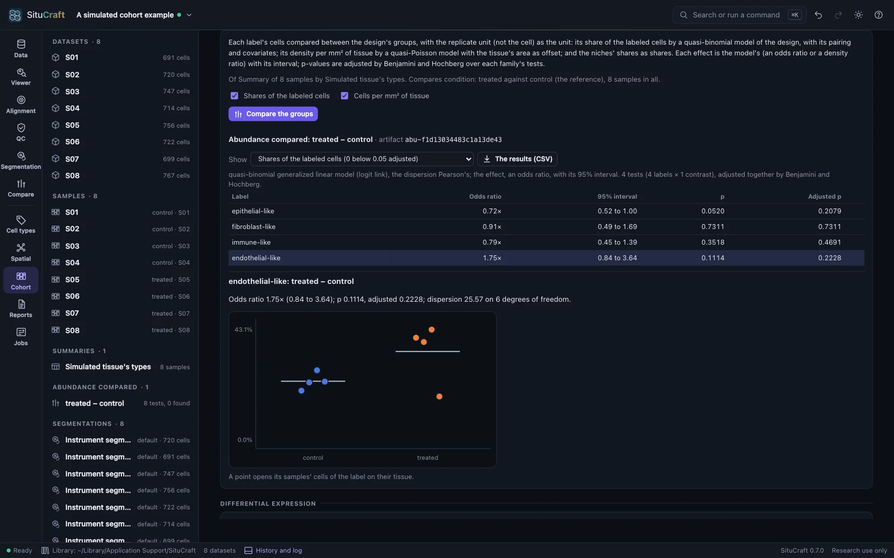
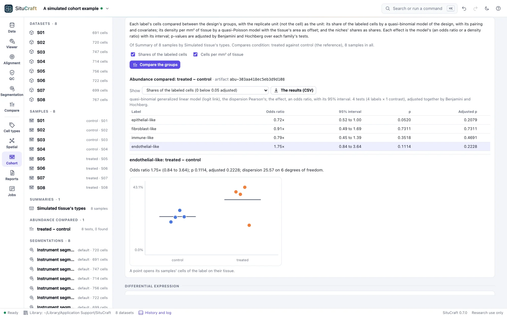

Differential abundance
Does a cell type make up more of the tissue in one group than another? SituCraft answers with each sample (or subject) as one observation, never each cell, by a model of the design, and gives the effect with its interval, not only a p-value.
The sample is the unit
A section holds thousands of cells, but its cells are not independent replicates: they share the subject, the slide and the run. Treated as replicates, they make tiny differences look certain. SituCraft compares the design's rows instead. Each row is a replicate unit, such as a subject, in a group, with its samples' cells combined (technical replicates). A paired design, such as each subject before and after, compares each subject with itself. See The design.
The models
Compare the groups in the Cohort view's Differential abundance fits a model for each label of the cohort table (see Sample summaries):
- Shares of the labeled cells: the label's cells out of each row's labeled cells, by a quasi-binomial generalized linear model of the design (logit link). The effect is an odds ratio: for a label that is a small share it is close to the ratio of shares, and for a large one it is larger.
- Cells per mm² of tissue: the label's cells by a quasi-Poisson model (log link), with the log of each row's tissue area as offset (the tissue within its region, for a region sample). The effect is a density ratio.
- Niches' shares: each niche's cells out of the cells with a window, as a share. The niches are found across the samples together, so a niche is the same kind of place in every sample.
The models are fitted as R's glm fits them. Samples vary more than the binomial or Poisson model alone allows, so the variation is measured, not assumed: the dispersion is Pearson's χ² over the residual degrees of freedom. Each contrast of the design (each group against the reference, or those chosen) is tested by a t test on those degrees of freedom. A label no sample has a cell of, or one a group has none of, is left untested, and the reason is said.
Reading the results
For each label and contrast the table gives the effect with its interval (95% by default), the p-value, and the p-value adjusted by Benjamini and Hochberg over the family's tests (all its labels and contrasts). The universe of tests is stated with the family, so the correction can be read. Rows whose adjusted p is below 0.05 are marked higher or lower.
Choosing a row plots each replicate unit's share or density by group, with each group's mean. A point opens its sample's cells of that label on its tissue in the Viewer, so a result can be traced to the cells behind it. The results (CSV) writes every test.


An interval that is wide, as with four subjects in a group, says how little the samples pin the effect down. A larger cohort, or pairing, narrows it. In the cohort before and after, where after treatment a cell is four times as likely to be endothelial-like, six subjects compared with themselves find the endothelial-like cells' odds 2.19 times as high after (1.54 to 3.12) and the epithelial-like cells' 0.48 times (0.27 to 0.84), near the 2.26 and 0.47 the true cells show: more endothelial-like and immune-like cells leave less room for epithelial-like ones.
Regions of one section compared as pseudo-samples (see The design) are marked so on every result: their tests describe the section's places, not subjects.
Labels from a reference
The same steps on every sample (see Sample summaries) can label every sample from one labeled single-cell reference instead of a marker set: choose A reference on this computer… under Labels from. Every sample's labels then come from the same reference, with the same names. The start page's A simulated cohort includes a reference of its types, made with its panel.
By remote control
compare_abundance compares the samples (shares, densities and niches, by the design draft or a saved design) and answers every test. show_sample_cells shows a sample's cells of a label on its tissue. cohort_steps and summarize_samples take a reference to label from. See Remote control.
How it is checked
- Against statsmodels: on 19 cases (the simulated cohort's shares and densities, by condition and adjusted for the slide; a paired design; three groups with a contrast between two; densities over varying areas), every coefficient, standard error, dispersion, t, p and interval equals statsmodels 0.15.0's (and R's) to 10⁻⁸.
- On null tables: of 4,000 tables of overdispersed counts without a difference, the tests reject about as often as their level says (5.6% at 5%, 1.1% at 1%).
- In the page: on the simulated cohort, each effect equals the pooled ratio of its counts (as a model of the groups alone gives), and every interval covers the ratio the true cells show. A sample's cells of a label are shown as the summary counts them. A null cohort, labeled from its own reference (its shares within 0.08 of its true types'), finds nothing, and the start page's null cohort none of its 14 tests below a raw p of 0.05. The cohort before and after, paired, finds the shift its truth holds. Each is a worked example, walked to its end by the viewer suite.
- On simulated cohorts: of 2,000 null cohorts, the shares', densities' and niches' tests below 0.05 in 4.7% to 5.0% of them, weekly; see Error rates and scale.